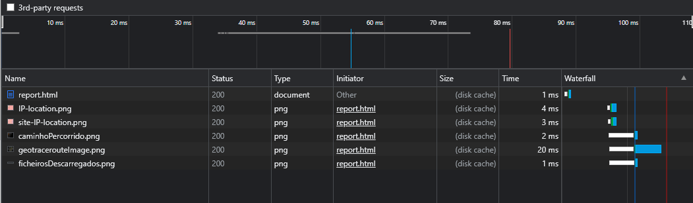
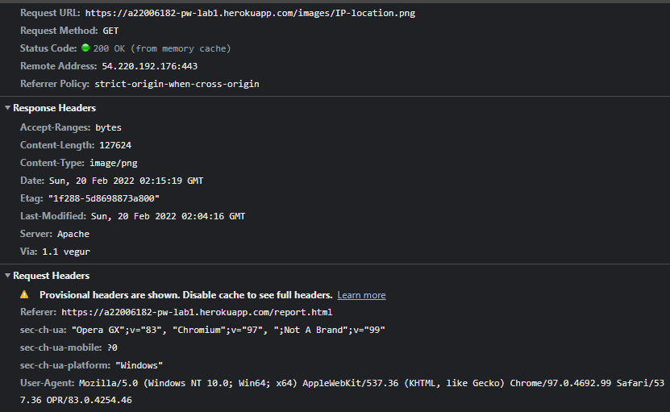
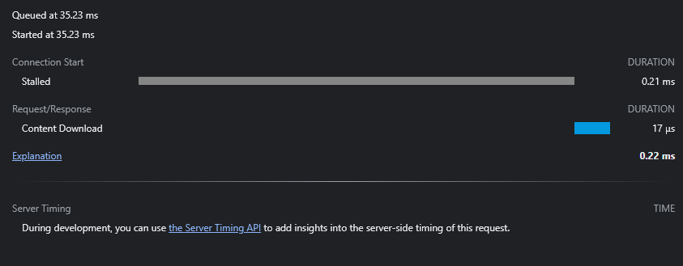

A Internet e a Web
Menu
Programação Web
A Internet e a Web
1 - Endereços IP
Primeiro foi pedido para verificar qual o IP do meu PC e do servidor web onde está a minha página.
Após isso verifiquei onde estavam localizados todos estes IPs, através deste site e este foram os resultados obtidos:
IP -> PC (Localização):
IP -> Site (Localização):
2 - Percurso
Com isso, consgui verificar o percurso dos pacotes IP desde o meu PC até o endereço IP destino através deste site:
3 - Inspect
Também foi pedido para que usássemos a ferramenta Inspect do browser no nosso site para conseguirmos vizualizar algumas coisas nele:
Quando clicamos em um hiperlink:
São descarregados alguns ficheiros que esta página contém:

Ao clicar nos ficheiros, temos algumas secções com informações dentro. Dentre elas:
Preview:
aparece a imagem do ficheiro.
Headers:
Aparece as informações sobre o ficheiro. Por exemplo:

Timings:
Aparece as informações sobre o tempo que demorou para o ficheiro ser carregado. Por exemplo:
